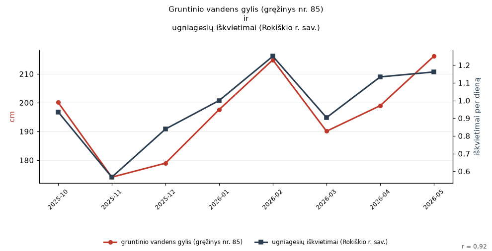

Pastaraisiais mėnesiais lyg tyčia sutapo: gruntinio vandens gylis (gręžinys nr. 85) ir ugniagesių iškvietimai (Rokiškio r. sav.)

Duomenų šaltiniai: Požeminio vandens lygis (LGT) · Gaisrai ir gelbėjimo darbai (PAGD)
Gruntinio vandens gylis (gręžinys nr. 85) ir ugniagesių iškvietimai (Rokiškio r. sav.) kyla ir krenta kartu: r = 0,92 per 8 mėn. (2025-10 – 2026-05). Rasta atsitiktinai peržiūrėjus tūkstančius porų: tai sutapimas, o ne priežastis.
Duomenys: „gruntinio vandens gylis (gręžinys nr. 85)“ (cm) ir „ugniagesių iškvietimai (Rokiškio r. sav.)“ (iškvietimai).
Tyler Vigen'o „Spurious Correlations“ dvasia: iš tūkstančių atsitiktinių Lietuvos atvirų duomenų porų šios dvi tiesiog nupiešė tą pačią kreivę. Niekas jų nesieja.
Eilutės: pozeminio_vandens_lygis#well=85#depth → gaisrai_ir_ivykiai#municipality=Rokiškio r. sav.#count